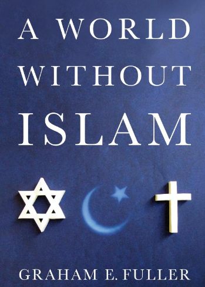

返回主页
没有伊斯兰的世界

作为中情局和RAND的专家：政府很方便的把一切罪过都归因于宗教。但Fuller用因素分析法证明，大部分争斗都是基于政治或经济的原因，剩下的小部分是因为愚昧和误会。真正由于宗教而导致的战争，可能就是政府与宗教的争夺。
What if Islam had never existed? To some, it's a comforting thought: No clash of civilizations, no holy wars, no terrorists. Would Christianity have taken over the world? Would the Middle East be a peaceful beacon of democracy? Would 9/11 have happened? In fact, remove Islam from the path of history, and the world ends up exactly where it is today.
Graham E. Fuller is an American author and political analyst, specializing in Islamic extremism. Formerly vice-chair of the National Intelligence Council, he also served as Station Chief in Kabul for the CIA. A "think piece" that Fuller wrote for the CIA was identified as instrumental in leading to the Iran-contra affair. After a career in the United States State Department and CIA （中情局） lasting 27 years, he joined Rand （兰德） Corporation as senior political scientist specializing in the Middle East. As of 2006, he was affiliated with the Simon Fraser University in Vancouver, Canada as an adjunct professor of history. He is the author of a number of books, including The Future of Political Islam.
参考：
Graham E. Fuller, A World Without Islam
Keohane, Power and Interdependence. (NeoLiberal)
Wendt, Social Theory of International Politics. (Constructivism)
Waltz, Theory of international politics. (NeoRealist)
《穆斯林的葬礼》 霍达
更多资讯，请访问： retter2012.com 。
“民族主义”与“五族共和”，这悖论如何解决？首先是相互理解，汉人高级干部要首先学习主要民族的语言和文化。否则，一切经济政治和军事手段都是无的放矢。除王蒙外，估计少有部长高官能担此重任。例如，粤语存废的问题，简体字正体字问题。大陆地区的电视节目，除广东外，全部实施普通话播出。在解放初如此狂热之际，粤语仍然在广播。现在，有更多人学说粤语了。当年晋商，为了生意不也认真学习蒙语、维语、俄语的吗？东南沿海，会荷兰语、英语、葡萄牙语、西班牙语的不在少数。广东外语外贸大学阿拉伯语专业，《古兰经》只学一页。我们怕什么？为什么现在就不行了呢？
大营子娃娃，小营子狗。不信，请看 Olympus Has Fallen （2013）。
version:1.0; jobnet@188.com © retter2012.com